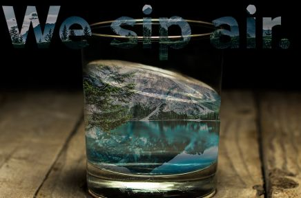

About My Work
Within my strategic communications journalistic curriculum, I have chosen art direction as my focus and have taken a variety of classes to prepare me for a career in graphic design. After taking Graphic Design I and II, Creative Portfolio, Illustrator Techniques, 3D Design for Advertising, and Graphic Design through the art school, I feel I have a set of amazing work to show future employers and other creatives who want to collaborate with me. Below are my absolute favorites - get excited! Click the "Contact" tab to let me know your thoughts.
Matt Healy Poster
 Matt Healy Poster
Matt Healy Poster- We Sip Air
- Missing Something?
 Own Your Electricity
Own Your Electricity Hulu Boomerang
Hulu Boomerang
This is by far my favorite project that I've ever done in my life. I am completely obsessed with Matt Healy and he was one of my first inspirations. I love his music, and I find his words very impactful. I think because of this wisdom he has a hard time making sense out of relationships, love and life. For people who can see the infinate complexities and possibilities in life, these simple things can be harder to grasp.
"Lost My Head" is the name of one of my favorite songs on this EP, and in my earlier versions of this poster I had him breathing out the words "I like it when you sleep, for you are so beautiful yet so unaware of it" to symbolize the arduous creative process that starts with "Losing" your mind and how efforless the final articulation can seem to the untrained eye.
I'm extremely interested in designing graphics within the music industry, so if you or anyone you know would like to collaborate with me, please hit the "Contact" button up to the left. :)
We Sip Air Campaign
This photo always puts me at ease. For graphic design II, a class I took a couple semesters ago in the strategic communications art direction program at the Missouri School of Journalism, I chose the Alpine Shop as my client for the entire semester. I organized three separate campaigns for this local outdoor gear company in Columbia, Missouri.
While I was envisioning the needs of the target audience for the Alpine Shop, I envisioned midwestern people who love the small town feel of Columbia, but likely want to set out on an adventure of their own. This element of "escape" took hold of my campaign, the concept being that you need the outdoors like you need air to breathe, or water to drink.
The "We Sip Air" campaign is aimed at bringing consumers to the realization that the Alpine Shop is their escape; the equipment, expertise and recommendations they need can all be found here.
Missing Something? Campaign
This photo is part of the second campaign I created for the Alpine Shop. This one, rather than addressing the consumers' desire to escape, pokes a bit of fun at the unprepared explorer. We've all been there before, you forgot a sock, your ski poles, or maybe even the bike itself?
This campaign is a great way of letting the Alpine Shop's target audience know that they can laugh at themselves a little, and rather than struggle to make their adventure happen, they can come to the Alpine Shop to get more prepared instead. "What would you do without our equipment?"
Own Your Electricity Campaign
This is the first campaign I ever created and remains my favorite. This campaign is aimed at the YAYA audience, targeting 18-24 year-olds who are likely met with a great deal of uncertainty about what the future holds. As a creative, I wanted this campaign to resonate with those of us who know we have so much to offer but are still cultivating our skills and finding our way.
Once you put your hands on the wheel, it's all you. Your story is unwritten, and in the Bolt EV your creative essense and who you are spills out through your fingertips into the world around you. You are safe, you are inherently worthy of this adventure and you can light up the world as you drive by.
Click here to watch the commercial storyboard video I created for this campaign.
The copy reads:
"The Chevrolet Bolt EV will take you to your own world. Be alone with your thoughts, let your creative vision come to life. Bolt from 0-60 in 6.5 seconds. Let your energy spill from your fingertips onto the wheel and into the world around you. With 250 miles per charge, cultivate your unique journey without stopping. Surround yourself in it. Make it your own."
Hulu Boomerang Campaign
This campaign is another one of my favorite concepts, I created this working with my copywriter Nicole Newman in creative portfolio - a semester-long class in which I worked consistently through the creative process to make several impressive campaigns.
The Hulu ad campaign is based around a consumer value that is very important to the target audience. The "next-day" viewing available on Hulu is equivalent to a boomerang in this context, your favorite shows and videos come straight back to you. This is a point of difference Hulu offers over most streaming services, in which you don't have to wait, wait, wait for a new season to come out and then binge watch it all in the next week (not like any of us have ever done this...).
Click here to watch the interactive banner ad video I created for this campaign.
The copy reads:
"Missed last night's episode of Bachelor in Paradise? Don't worry about it. Hulu episodes are one-by-one so you don't have to wait an entire season to see if Chris gives Kendall the final rose. The day after it airs, Hulu brings your favorite shows right back to you." -Nicole Newman
More About Me
| Software | Experience Level |
|---|---|
| Photoshop | Advanced |
| Illustrator | Proficient |
| InDesign | Proficient |
| Maya | Proficient |
| Google Analytics | Proficient |
| WordPress | Proficient |
| Wix | Proficient |
The items on the table are self-evaluations of course, but my capabilities range beyond the categories of "Proficient" or "Advanced."
Something you need to know about me is I am used to jumping headfirst into a software in which I am unfamiliar. I am not someone who stops and says “I can’t figure this out,” I have a way of allocating my resources and I will persist until I find a solution. I am extremely passionate about digital strategy because it is what ensures that my creative vision comes to life and reaches others. I’m all about the “why” and my ideal job would connect the creative with the strategy.
At work for example, I obtained my Google Analytics certification in order to help out with analytics, I learned Canva, eForce reporting, and how to run and maintain a SharePoint site in a short two months and was able to stay on working part-time remotely for Arrow Electronics in Denver while I finish school.
Also, I volunteered to 3D model a hot dog stand in Maya for my capstone class, National Student Ad Competition. Our client is Wienerschnitzel and I thought this would be the best way to showcase our ideas, in a lifelike model. I had only taken a one credit hour class about Maya, and needed a refresher on the interface but I didn't let this hinder our progress. I'm happy to say the model turned out really well and we are turning in the final version of our book to submit for the national competition tomorrow.
Whenever I come up against roadblocks I see it as an opportunity to learn. I’ll make up for anything my curriculum hasn’t covered by taking classes or tutorials until I can figure it out.
I’ve been very fortunate to gain all the experience I have, but just because my education is finished doesn’t mean I’m done learning.
Please click the “Work” tab to reach out to me with any opportunities you see fit to my skillset, if you have any recommendations on classes/materials I can use to further my experience level, if you have wisdom of any kind to share with a young creative, or if you’d just like to bounce ideas off one another. I also am in the process of creating work for sale, like posters, personalized calligraphy, or album covers so if you're interested or have any suggestions please let me know.